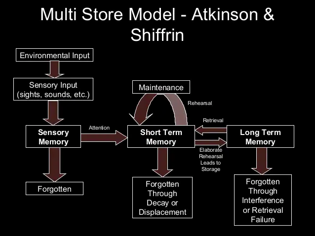
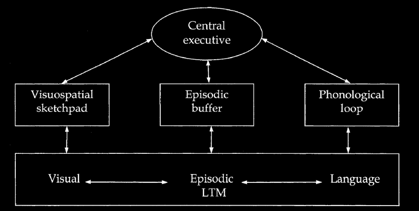
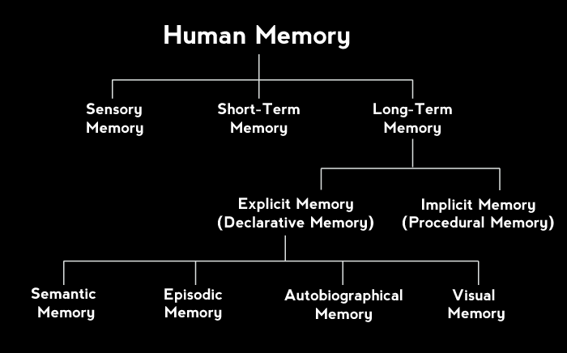

Summary
- Search metaphors are inadequate to describe how our memorysystems
work: Reconstruction metaphors, such as “putting together a dinosaur
skeleton,” are far moreaccurate
- Sensory memory consists of iconic and echoic functions andallows us
to “hold on” to transient information for a brief period of time
- Immediate memory can be described as the “contents ofconsciousness”
and can be characterized by representation, duration, and capacity
- The inner eye and inner voice describe two ways in whichimmediate
memory are represented; these concepts are analogous to the visuospatial
sketchpad andphonological loop of Baddeley’s working memory model,
respectively
- The duration of immediate memory is fleeting, lasting only afew
seconds without a person employing active rehearsal
- The capacity of immediate memory can be described by measuringmemory
span and can be improved through the process of chunking
- Long-term memory can be examined by looking at its threeprimary
types: episodic (memory for events), semantic (memory for facts), and
procedural (memory foractions or processes)
- Elaborative rehearsal helps transfer information fromimmediate
memory to long-term memory, and imagery, organization, distinctiveness,
and self-reference areeffective ways to engage in elaborative
rehearsal
- Several strategies for effectively encoding informationinclude
spacing out learning (spaced practice), using mnemonic techniques,
adaptive memory strategies,and retrieval practices
- The cues that are present at encoding and retrieval caninfluence and
determine whether we will remember a piece of information, with the
encoding specificityprinciple and transfer-appropriate processing
describing the role of both context and type of mentalprocessing,
respectively
- There are seven “sins” of memory that can be divided into twogroups:
errors of omission and errors of commission; these errors describe
whether information cannot berecalled (omission) or is recalled
incorrectly/inappropriately (commission)
- Interference (both proactive and retroactive) best explainswhy we
forget information, and it plays a role in the errors of omission:
transience, absent-mindedness,and blocking
- Errors of commission (misattribution, suggestibility, bias,and
persistence) occur when we recall information incorrectly or
inappropriately and can occur even formajor life-altering events, as is
seen in flashbulb memories
- The hippocampus contributes to the formation of long-termmemories:
It is heavily involved in episodic memory, but plays a smaller role in
proceduralmemory
- Retrograde amnesia refers to refers to losing one’s memory ofpast
events (e.g., someone hitting their head and not remembering who they
are); anterograde amnesiaoccurs when someone cannot form new
memories.
What For?
memory: structures+processes involved in storage+retrieval
of information search metaphor: describe the processes involved
in memory using relatable terms and phrases
- remembering: search through the contents of our minds
- failure of search: inability to remember something
- search metaphor is insufficient
Thinking about Function
reconstruction metaphor: how we primarily use memory to
cobble together a useful response using what we know + the situation
around us autobiographical memory: gives continuity to your
life as an individual
History
Weber - perception
Ebbinghous - forgetting
Encoding Memories
- encoding: transform an experience into memory
- storage: maintain information about an event over time
Sensory Memory
- keeps information translated by the senses briefly active in a
relatively unaltered, unexamined form
- is thought to feed into the more general immediate memory
- visual: iconic memory
- auditory: echoic memory
- sometimes longer than visual

- sensory trace: stimulus
remains after is gone - termed sensory memory, very short-term - studied
by George Sperling (iconic memory)
actively holds on to a limited amount of information so that it can
be manipulated and processed
- aka short-term/working memory
Characteristics
- inner voice: talk in your head, evidence for verbal
representation in immediate memory
- inner eye: see stuff using imagination, evidence for visual
representation in immediate memory
- rehearsal: repeat information
- duration: how long the memory system can contain
information
- indefinite with rehearsal
- ~3 sec without
- capacity/memory span: amount of information held at once
- chunking: arrange information into compact and meaningful
chunks
Model

- visuospatial: iconic memory (inner eye)
- episodic: immediate memory
- phonological lookup: echoic memory (inner voice)
Long-term Memory
store and recall information over extended periods of time
Types
- episodic: pertain to specific events
- semantic: specific facts not based on personal
experience
- procedual: how something is done (eg motor skills)

Transfer to LTM
- elaborative rehearsal: actively manipulating information in
the immediate memory to meaningfully connect it to other information
already stored in LTM
- level of processing
- deep: encoding new information through making meaningful
connections to existing knowledge
- shallow/structural: based only on its surface
characteristics
| Imagery |
imagine a story |
not prefect, not exact representation of
reality, tend to be generalised |
| Organisation |
group into categories |
often leads to mistakes within the
category |
| Distinctiveness |
remember the exclusion of order |
time-consuming, hard to remember large
amount, use with org |
| Self-Reference |
Relate to yourself |
hard with more detailed material, for
individualistic cultures |
Effective Encoding Strats
memory is the result of processes, can become more effective with
practice - massed practice: repreated exposure over a very
short period of time/without gaps - not effective - spacing
effect: learning is most robust when repeated exposure occurs over
a longer timeframe - mnemonics: provide a framework for
encoding and recall - adaptive memory: evolutionary, the way
that brains are designed to use - retrieval practice: repeated
retrieval - memory cue: use something we know to help
retrieve
Retrieval
Centrality of Cues
cue: helps retrieve information
- free recall: without cues
- cued recall: with cues
Specificity Principle
encoding specificity principle:cue is only useful if it
matches the original context during encoding
Transfer Appropriate
transfer-appropriate processing: engaging in similar
processes at both encoding and retrieval tends to enhance recall
Implicit Memory
remeber without conscious
Frederic Barlett
- memory is reconstructive
- people remember gist of things, not details
Error and Forgetting
Memory Errors
- error of omission: information cannot be brought to
mind
- error of commission: wrong/unwanted information is brought
to mind
Omission
Schacter identified 3 errors of omission: - transience:
unable to retrieve information because it has been forgotten (memory
decay) - 2 interferences that cause forgetting (leads to transience) -
retroactive interference: inability to retrieve older
information due to influnce of newer+similar information -
proactive interference: old information interferes with new
information - time/decay is not responsible for
transience - absent-mindness: memories sometimes are
unavailable because failure to encode them - blocking: not
enough distinct cues are available to help recover a specific memory -
tip-of-the-tongue
Commission
- misattribution: incorrectly recall the source of the
information
- deja vu: can’t remember the source
- flashblub memories: memories for the details surrounding
events that are surprising + significant
- suggestibility: memories can be altered by context
(remembered to better fit the current context)
- misinformation effect: misleading information alters a
subsequent memory
- bias: memories can change as a result of the influence of
knowledeg and beliefs
- schemas: complex knowledge structures that help put
information in context, but often leads to overgenerealisation
- persisitence: memories can be retrieved when they are not
wanted
Forgetting
- hyperthymesia: near perfect autobiographical call
- has additional connections between amygdala and hippocampus
- amnesia: memory loss due to physical damage/problems in the
brain
- retrograde amnesia: loss of memories prior to a traumatic
event
- anterograde amnesia: inability to encode new information
into LTM
- alcohol => Korsakoff syndrome => anetograde amnesia
- H.M.
- had seizure
- hippocampus removed
- had anterograde and retrogade amnesia
- shows distinction between immedaie/LTM and procedural/semantic
memory